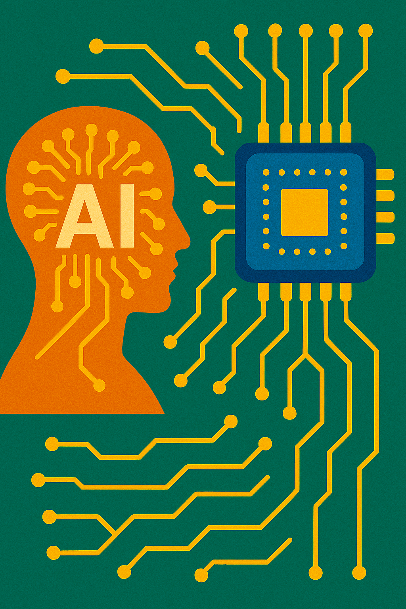

Tekoäly eilen, tänään ja huomenna
Tekoälyn historia
Tekoälyn historia juontaa juurensa jo antiikin mytologioihin, joissa esiintyi itseajattelevia olentoja.
Moderni
tekoälytutkimus sai kuitenkin alkunsa 1900-luvun puolivälissä, kun Alan Turing esitti kysymyksen: "Voiko
kone
ajatella?". 1950-luvulla kehitettiin ensimmäiset tekoälymallit, ja 1960–70-luvuilla tutkijat loivat
sääntöpohjaisia järjestelmiä, jotka pystyivät ratkaisemaan monimutkaisia ongelmia tietyillä rajatuilla
alueilla.
1980-luvulla neuroverkkojen ja koneoppimisen kehitys lisäsi tekoälyn tehokkuutta, mutta todellinen läpimurto
tapahtui 2000-luvulla, kun laskentatehon kasvu ja suurten tietomäärien hyödyntäminen mahdollistivat
syväoppimisen
nousun. Tekoäly alkoi yhä enemmän muistuttaa ihmismäistä oppimista ja päätöksentekoa.
Tekoäly tänään
Tekoäly on nykyään olennainen osa jokapäiväistä elämäämme. Se toimii hakukoneiden, sosiaalisen median
algoritmien,
puheentunnistuksen ja automaation taustalla. Suurimmat edistysaskeleet on nähty luonnollisen kielen
käsittelyssä,
kuvantunnistuksessa ja ennakoivassa analytiikassa. Yritykset käyttävät tekoälyä tehokkuuden parantamiseen,
asiakaspalvelun automatisointiin ja lääketieteellisten diagnoosien tarkentamiseen.
Erityisesti generatiivinen tekoäly, kuten kielimallit ja kuvageneraattorit, on mullistanut luovan alan.
Tekoäly
voi kirjoittaa artikkeleita, säveltää musiikkia ja luoda visuaalista taidetta. Samalla keskustelu etiikasta
ja
tekoälyn sääntelystä on noussut keskiöön – kuinka varmistamme tekoälyn vastuullisen käytön?

Kyberturvallisuus ja tekoäly

Tekoälyn kehitys tuo mukanaan myös uusia haasteita kyberturvallisuudelle. Tekoälyä voidaan käyttää sekä
puolustuksessa että hyökkäyksessä kyberuhkia vastaan. Rikolliset voivat hyödyntää tekoälyä esimerkiksi
kehittyneempien tietojenkalasteluhyökkäysten, haittaohjelmien ja väärennettyjen sisältöjen, kuten
deepfake-videoiden, luomiseen.
Toisaalta tekoäly voi myös parantaa kyberturvallisuutta analysoimalla suuria tietomääriä ja tunnistamalla
uhkia
ennen kuin ne ehtivät aiheuttaa vahinkoa. Esimerkiksi tekoälypohjaiset järjestelmät voivat havaita
poikkeavuuksia
verkkoliikenteessä ja estää mahdollisia hyökkäyksiä reaaliajassa. Tekoälyn hyödyntäminen tietoturvassa
edellyttää
kuitenkin jatkuvaa valvontaa ja eettisiä pohdintoja, jotta sitä ei käytetä haitallisiin tarkoituksiin.
Tekoälyn tulevaisuus
Tulevaisuudessa tekoäly tulee kehittymään entistä itsenäisemmäksi ja kykenevämmäksi. Kvanttitietokoneiden
yleistyminen voi tuoda mukanaan valtavan hyppäyksen laskentatehossa, mikä mahdollistaa vielä kehittyneemmät
tekoälymallit.
Yksi suurimmista kysymyksistä on tekoälyn autonomian kasvu: missä määrin annamme sen tehdä päätöksiä
puolestamme?
Voidaanko tekoälyä käyttää laajasti esimerkiksi politiikassa, oikeusjärjestelmässä tai jopa lääketieteessä
ilman
ihmiskontrollia? Lisäksi kehitetään yhä enemmän tekoälyä, joka ymmärtää ihmisten tunteita ja pystyy
toimimaan
eettisesti kestävällä tavalla.
Tekoälyn kehityksellä on valtava potentiaali, mutta se tuo mukanaan myös haasteita, kuten työmarkkinoiden
muutokset, tietoturva- ja yksityisyyskysymykset sekä tekoälyn eettiset ja juridiset rajat. Näihin
haasteisiin
vastaaminen määrittää, millaiseksi tekoälyn tulevaisuus muotoutuu.

Johtopäätös
Tekoäly on kehittynyt valtavasti viimeisten vuosikymmenten aikana, ja sen vaikutus yhteiskuntaan on
kiistaton.
Vaikka tekoäly on jo nyt merkittävä osa arkeamme, sen tulevaisuus tuo mukanaan entistä monimutkaisempia
kysymyksiä
ja mahdollisuuksia. Se, kuinka hyödynnämme tekoälyä viisaasti ja vastuullisesti, ratkaisee sen roolin
tulevaisuuden maailmassa.
Erityisesti kyberturvallisuus tulee olemaan avainasemassa tekoälyn kehityksessä. On välttämätöntä varmistaa,
että
tekoälyä käytetään turvallisesti ja vastuullisesti, jotta se ei joudu vääriin käsiin tai aiheuta
yhteiskunnallisia
riskejä. Vain huolellisella sääntelyllä, eettisillä ohjeilla ja jatkuvalla teknologian kehittämisellä voimme
taata
tekoälyn hyödyttävän yhteiskuntaa ilman merkittäviä turvallisuusuhkia.